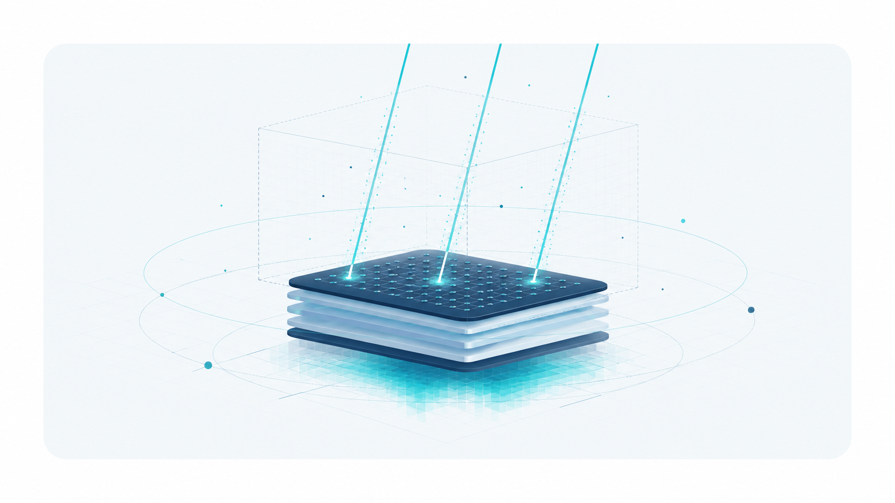
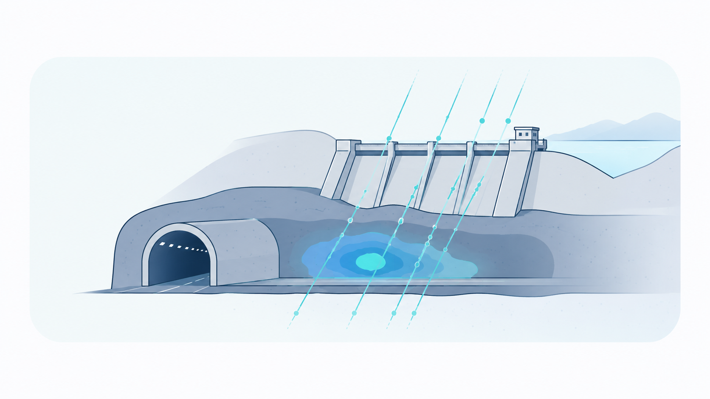
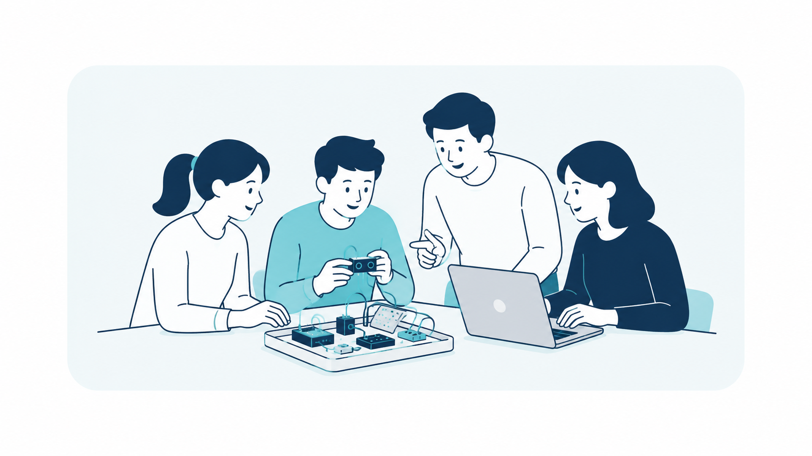

01

ミューオグラフィー技術開発
小型ミューオン検出器、データ取得基盤、 画像再構成・可視化技術の研究開発に取り組みます。
ABOUT US
株式会社 mu factorialは、宇宙線ミューオンを用いた内部可視化技術「ミューオグラフィー」の社会実装を目指す、スタートアップです。
地中や大型構造物の深部は、従来の点検手法だけでは状態を把握しにくい領域です。私たちは、小型で扱いやすい検出器と解析技術を開発し、見えないリスクを分かりやすい情報に変えることで、追加調査・補修・投資の優先順位づけを支援します。
BUSINESS
技術開発と教育の両面から、ミューオンをより身近で実用的な技術へ育てます。

小型ミューオン検出器、データ取得基盤、 画像再構成・可視化技術の研究開発に取り組みます。

トンネル、ダム、地盤などを対象に、 測定・解析・レポートを組み合わせた実証を進めます。

宇宙線ミューオン計測や電子工作を通して、数理的な思考力と科学技術への理解を育む 学校・企業向けの実践型プログラムを提供します。
MISSION / VISION / VALUES
MISSION
VISION
VALUES
研究の中で培われた知見や技術を、現場で使える形に変えていく。
素粒子という目に見えない存在の力を活かし、社会に新しい視点と解決策をもたらす。
物理、数学、計測、解析の力を、複雑な社会課題に向き合うための創造的な武器として活かす。
ミューオンや素粒子を専門家だけのものにせず、企業、自治体、教育現場、次世代の人材が触れられるものにする。
技術開発、実証、教育を積み重ね、未来の当たり前になる科学技術を社会に根づかせる。
COMPANY